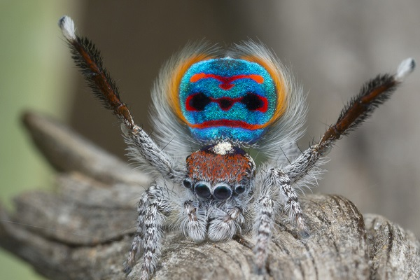

running is best done outside where its best to be anyway

A runner truly becomes a runner when to run or not to run is not the question.
nor is the question when to run but rather the question is where to run
A runner truly becomes a runner when to run or not to run is not the question.
nor is the question when to run but rather the question is where to run
https://en.wikipedia.org/wiki/Jumping_spider#/media/File:Saitis_barbipes_signaling.jpg
https://news.science360.gov/obj/pic-day/a19750ed-2d1a-40bf-a5d9-80b60ed6b132/tiny-peacock-jumping-spider
https://www.flickr.com/photos/bagogames/13628118464